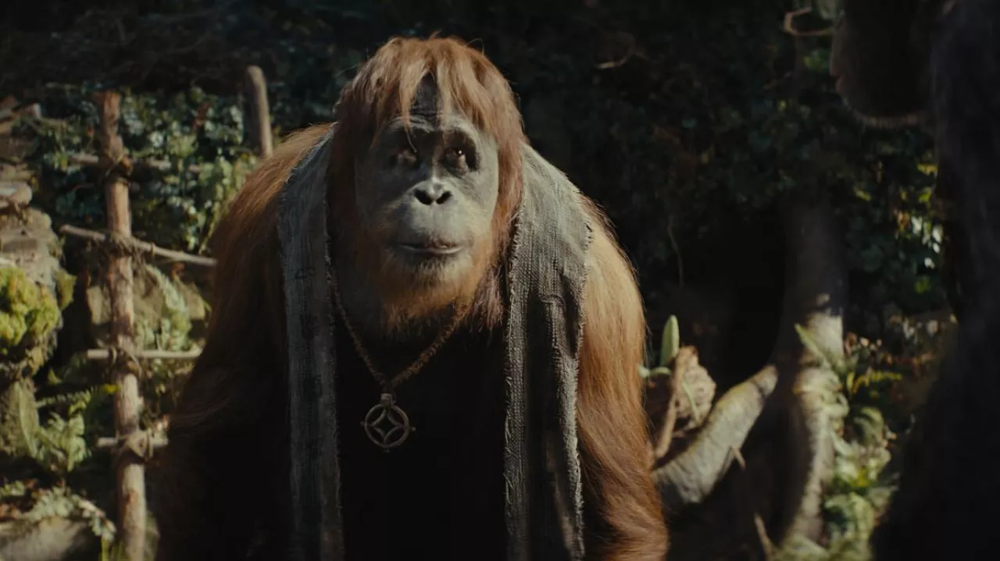

|
My goat, Caesar, is the great leader of the ape revolution. Portrayed by the great Andy Serkis, he sought peace and prosperity for apekind, and led his people to freedom. |
|
| Wikipedia | Movies in order |
|
Young Caesar |
| Caesar was raised by Will Rodman after he discovered his enhanced mental ability passed onto him by his deceased mother, who was a test subject at GenSys labs. After being taken to an enrichment center by animal control, Caesar rebelled by sneaking out and stealing the same formula that made him intelligent and using it on his fellow apes. He led his people well, and always tried to coexist with humans, for Will was good to him. However, when forced to go to war Caesar was brave and even after being recaptured he devised a plan to free himself and his fellow apes. Even after his death, his legacy serves as a guideline for apes centuries in the future. |
|

Raka, a member of the Order of Caesar, 300 years after his Caesar's death. |
|
Caesar of course would not be what he is if not for the great Andy Serkis, who embodies Caesar and gives an impeccable performance. He received numerous nominations and awards, showing how impactful he was for the character. |
| Achievements | |
|---|---|
| Led the ape uprising in San Francisco. | Andy Serkis, the actor behind Caesar, won the Saturn Award for best supporting actor in Rise of the Planet of the Apes. |
| Led the apes for 10 years following their liberation while human civilization fell. | Stopped Koba from taking over the ape colony and defeated him. |
| Freed his fellow apes from The Colonel's camp. | Led his tribe to a new land to settle before passing away. |
| APES TOGETHER, STRONG. |